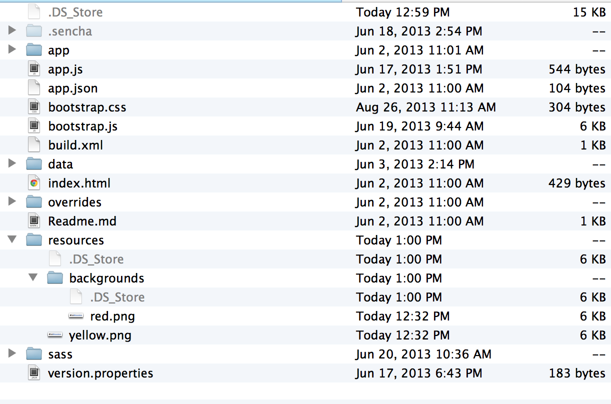
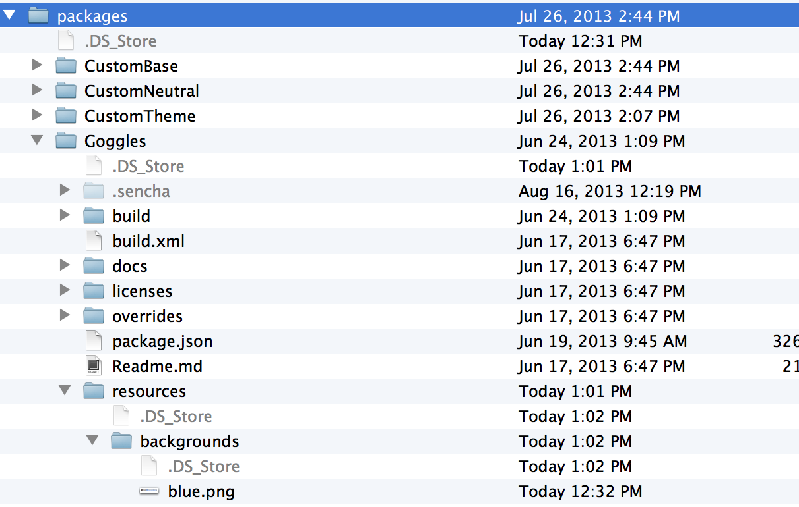

w * Learn how to implement images * Lean about paths to resources * Learn how to implement custom fonts * Learn how to implement custom icons
Implementing an image by using the html tag.
Easy but dirty.
Implementing an image by using Ext.Img class.
Very powerful.
Implementing a background image in the CSS Structured.
Where to save the images?
When app specific: [workspace]/resources/ folder.
When global theme: [workspace]/packages/[theme]/resources/ folder.
items: [{
xtype: 'container',
html: '<img src="resources/logo.png" height="25" alt="ExtReader"/>'
}]
items:[{
xtype: 'image',
src: 'resources/logo.png',
alt: 'ExtReader',
height: 25
}]
items: [{
xtype: 'container',
cls: 'mybackground'
}]
.mybackground {
background: #fff url('background.png') repeat-x;
}
You don’t need to worry about paths to images in Ext JS since it’s part of the application build process.
When building the app, the global theme images and the app specific images will be automatically copied over to the resources build folder. (build/[appname]/resources)
Note: subfolders will be copied too!
/* red image: resources/backgrounds/red.png */
.bgred {
background: url('backgrounds/red.png') repeat-x;
}
/* yellow image: resources/yellow.png */
.footer {
background: url('yellow.png');
}

/* blue image: packages/[mytheme]/resources/backgrounds/blue.png */
.bgblue {
background: url('backgrounds/blue.png') repeat-x;
}

Images saved in packages/[mytheme]/resources and images saved in [myapp]/resources/. will be copied to the build/[appname]/resources folder.

Under the roots, this happens also with paths in Ext.Img classes and image tags and other resources such as fonts.
However, while developing you would point images to the /resources/ folder, since you don’t want to build every time while developing. Once you build, Sencha Cmd will take care.
Images can be saved to Base64 strings. (Binary to ASCII Text). It’s a technique what’s been used for years for sending email image attachments. When you are not familiair with Base64 strings, they look like these:
data:image/png;base64,<LONG BASE64 STRING WITH ENCODED DATA>"
An advantage of a string like this, is that you can cache it, maybe you want to save it in a database. Instead of an URL to a path you pass in the Base-64 string.
When you are extending from other themes, some components contain images that are inherited from a parent theme.
In some cases you may need to override an image. This can be easily done by placing the desired image in packages/[mytheme]/resources/images/ and giving it the same name as the image it is intended to override.
For example, let’s change the info icon of the MessageBox component. Save the following image as packages/[mytheme]/resources/images/shared/icon-info.png ==== Implementing custom fonts .The following steps are required to implement a custom font.
Download a font-face kit
Create fonts folder in resources folder.
Implement font in Sass
Assign font
Build
@font-face is a CSS technique used nowadays to implement custom
web fonts. Where with system fonts it picks the font if available in your OS, @font-face downloads the font from the Internet.
Unfortunately the major browsers can’t come up with one web font solution. Therefore you have to embed multiple web font extensions into your Stylesheet. See [styles_fontfaceoverview].
| Browser | TTF | EOT | WOFF | SVG |
|---|---|---|---|---|
Firefox |
X |
_ |
X |
_ |
Google Chrome |
X |
_ |
X |
X |
Safari |
X |
_ |
X |
X |
Mobile Safari |
X |
_ |
X |
X |
IE10 |
_ |
X |
X |
_ |
Android Browser |
X |
_ |
_ |
X |
BlackBerry Browser |
X |
_ |
X |
X |
@font-face kit
A font service:
@font-face {
font-family: 'DroidSansBold';
src: url('../resources/fonts/DroidSans-Bold-webfont.eot');
src: url('../resources/fonts/DroidSans-Bold-webfont.eot?#iefix') format('embedded-opentype'),
url('../resources/fonts/DroidSans-Bold-webfont.woff') format('woff'),
url('../resources/fonts/DroidSans-Bold-webfont.ttf') format('truetype'),
url('../resources/fonts/DroidSans-Bold-webfont.svg#DroidSansBold') format('svg');
font-weight: normal;
font-style: normal;
}
Yes it’s possible to Base64 encode fonts!
To get a Base64 font, upload and encode every font extension to an encoder:
http://www.opinionatedgeek.com/dotnet/tools/base64encode/
It will present you the Base64 for each font file. These Base64 strings you can implement in your Sass.
@font-face{
font-family: "DroidSansBold";
src: url(data:font/tff;base64,<here>) format('TrueType'),
url(data:font/svg;base64,<here>) format('svg'),
url(data:font/eot;base64,<here>) format('eot'),
url(data:font/woff;base64,<here>) format('woff');
}
Set a CSS class on a component, to target it from the CSS.
.mycomponent {
font-family: 'DroidSansRegular';
line-height: 1.6em;
}
Pixels Pixels (px) are fixed-size units that are used in screen media. One pixel is equal to one dot on the computer screen (the smallest division of your screen’s resolution). Many web designers use pixel units in web documents in order to produce a pixel-perfect representation of their site as it is rendered in the browser.
Ems "Ems" (em): The em is a scalable unit that is used in web document media. An em is equal to the current font-size, for instance, if the font-size of the document is 16px, 1em is equal to 16px. Ems are scalable in nature, so 2em would equal 32px, .5em would equal 8px, etc.
In theory, using em instead of px will allow the layout to re-size more easily based on user preferences. But nowadays, modern browsers can resize px layouts as well as em layouts so it might not be as relevant as it was some years ago.
When you think the calculation of ems is annoying… Let’s Sass calculate it for you!
@function em($target, $context: $base-font-size-em) {
@if $target == 0 { @return 0 }
@return $target / $context + 0em;
}
@function px($target, $context: $base-font-size) {
@if $target == 0 { @return 0 }
@return $target / $context + 0px;
}
$base-font-size: 15px;
A build process is required in order to see the newly implemented fonts. This will copy and link the fonts to the build folder.
sencha app build
==== Implementing Glyps and Icons
.The following steps are required to implement a custom icon font.
Choose an icon font
Create a font pack
Download the icon font.
Implement icon font in Sass
Assign icon font
Build
Icons delivered as a font file and mapped to (HEX) character codes. Icon font can be embedded with CSS like any other custom font.
Icon Fonts are vectors. Icons can easily change size and they are always best quality. Perfect on Retina displays.
No need for Photoshop Icon Fonts can change colors, shades, contrasts and have no background. Customizable with CSS
Screen reader compatible Font icons won’t spam your screen reader. No additional markup is required.
http://icomoon.io/app http://www.pictos.cc http://fontello.com/ http://fortawesome.github.io/Font-Awesome/
Convert text to unicodes: http://www.branah.com/unicode-converter
Set character and unicode to the every icon.
Set default font metrics (for example 16px)
Give the font a name


This works exact the same as implementing any other font.
Sometimes the CSS file is included with the font kit download.
@font-face {
font-family: 'MyFont';
src: url('font/myfont.eot?22334');
src: url('font/myfont.eot?22334#iefix') format('embedded-opentype'),
url('font/myfont.woff?22334') format('woff'),
url('font/myfont.ttf?22334') format('truetype'),
url('font/myfont.svg?22334#myfont') format('svg');
font-weight: normal;
font-style: normal;
}
Again don’t worry about the paths, since it will be part of the build process.
glyph config.Specify the decimal code that maps to the unicode character you choose while you’ve created the font pack. You can convert the character to a decimal with converters: http://www.branah.com/unicode-converter
Specify the name of the font.
glyph: '115@MyFont',
When no font is specified, the Pictos icon font will be used.
glyph: '71',
Use Ext.setGlyphFontFamily(); to set the icon font programmetically.
var buttons = [];
for (var i = 33; i < 127; i++) {
buttons.push({
xtype: 'button',
text: i,
scale: 'medium', // Try 'small' and 'large'
glyph: i + '@Pictos' // alternate config if Ext.setGlyphFontFamily() was not set
});
}
Ext.create('Ext.panel.Panel', {
renderTo: Ext.getBody(),
title: 'Sample',
height: 500,
width: 620,
defaults: {
xtype: 'button',
margin: 2
},
autoScroll: true,
items: buttons
});
Some components have no glyph property.
It’s still possible to create custom icons.
This trick can be done with the CSS pseudo selectors:
:before and :after that implement content
before or after the component in the DOM.
.myclass:before {
content: "C"; //character mapped to an icon
font-family: 'MyIconFont'; //icon font
color: red; //set additional colors or dimensions...
margin-right: 10px;
}
icon - path to an image
iconCls - a CSS class specifying a background image
iconAlign - align icon to top, right, bottom and left
Ext.create('Ext.panel.Panel', {
title : 'Panel',
renderTo : Ext.getBody(),
height : 200,
bodyPadding : 16,
defaults : {
margin: 8
},
layout : 'vbox',
items : [{
xtype : 'button',
text : 'Sunny',
icon : 'resources/images/weather_sun.png'
}, {
xtype : 'button',
text : 'Rainy',
icon : 'resources/images/weather_rain.png',
iconAlign : 'right'
}]
});
A build process is required in order to see the newly implemented fonts. This will copy and link the fonts to the build folder.
sencha app build